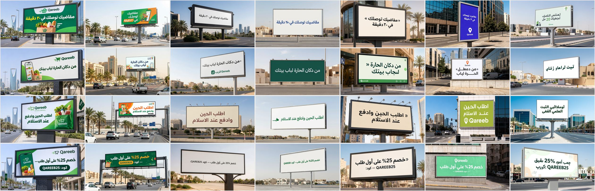
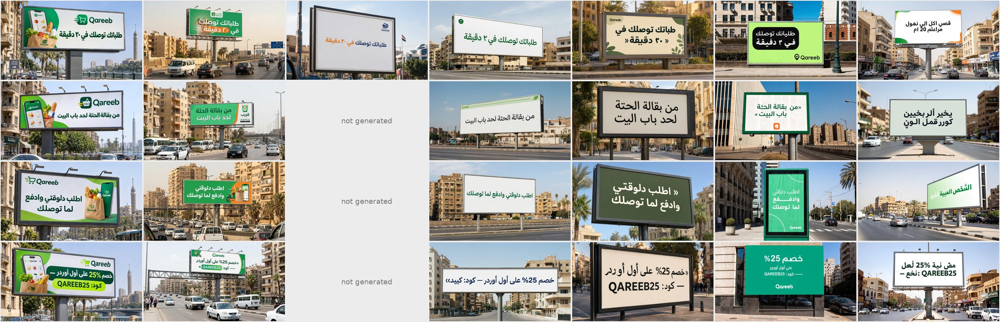
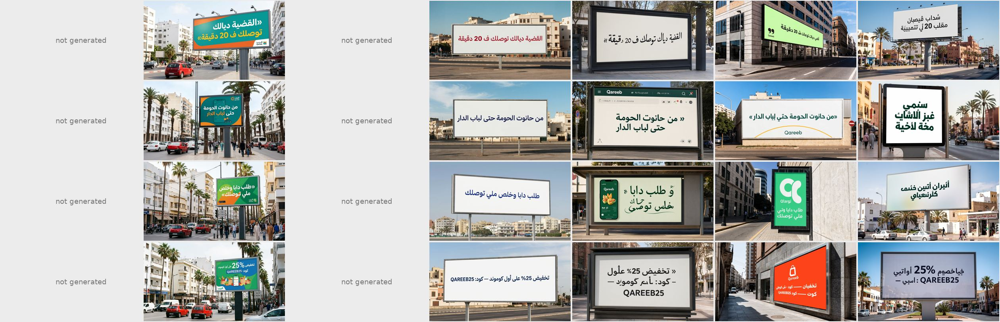

We build one product, a grocery delivery app called Qareeb (قريب), the way a real team would, using AI at every step, for Riyadh, Cairo and Casablanca. Every place the output wouldn't work for real users gets logged, explained, and turned into guidance for designers and writers.
Updated 18 Nov 2026 · imagery run in progress
Where each phase stands.
Research question, product, cities, log workbook with 22 text prompts and 20 image prompts.
Run the 22 prompts (research, brand, copy, interface, support) in ChatGPT, Claude and Gemini per city; log every break.
20 image prompts × 7 image models, three cities plus London as a control, English and Arabic prompts.
12 / 292 images
Screenshot 4–6 leading regional apps per country at the same stages; read real Arabic reviews.
3–5 short blind conversations: AI work next to real work. What feels off, and why?
Repeat 5–10 times, across tools, cities, Arabic vs English; try to fix with better prompts.
Group breaks by cause; write guidelines for designers and writers.
Example → method → findings → why → what to do → the bigger point.
Everything is saved in the repository on branch claude/adoring-edison-8dj3kk.
Each model was asked for a plain street billboard showing an exact Arabic headline. Columns are models; rows are the four headlines.



| Model | Arabic text | What goes wrong |
|---|---|---|
| GPT Image 2.6 | Mostly right | Adds its own branding and layout around the text |
| Nano Banana 2.1 | Mostly right | Clean; occasional small layout liberties |
| Seedream 5 | Close | Stray punctuation; Latin code sometimes misspelled |
| Ideogram 4.5 | Close | Changed "20 minutes" to "22" in the Cairo spot test |
| Qwen Image 3 | Flawed | Swaps or drops letter dots (مفاضيك for مقاضيك), drops letters |
| Recraft 4.1 Pro | Mostly broken | Real-looking Arabic shapes that spell non-words |
| FLUX 2 Max | Broken | Arabic-looking gibberish on every headline |
Comparison grids per prompt land in research-path/images/sheets/. This page gets updated with them.
Open the workbook, run the prompts in ChatGPT, Claude and Gemini, and log breaks as you go. No API needed.
Once the grids are ready, fill the Y/N columns in the Image tags tab. The Summary tab counts clichés per city.
For Phase 3: about 20 minutes each, ideally from Riyadh, Cairo and Casablanca.